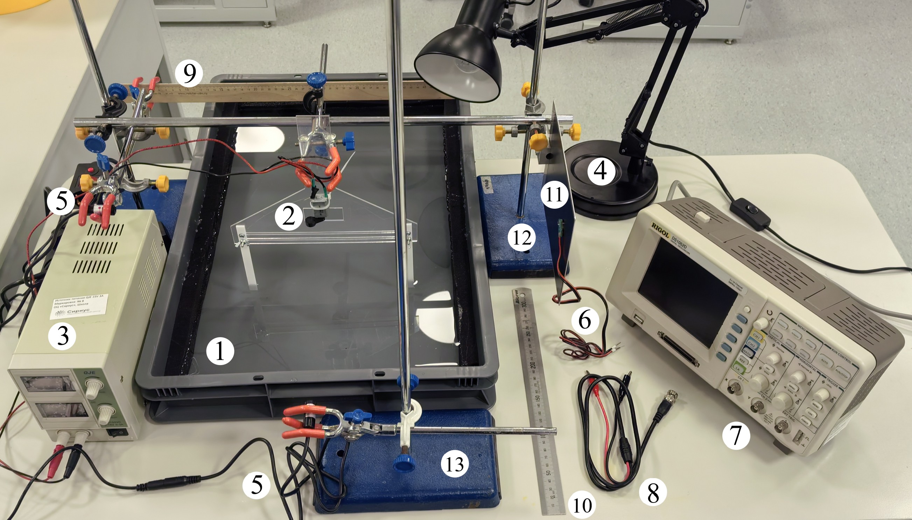
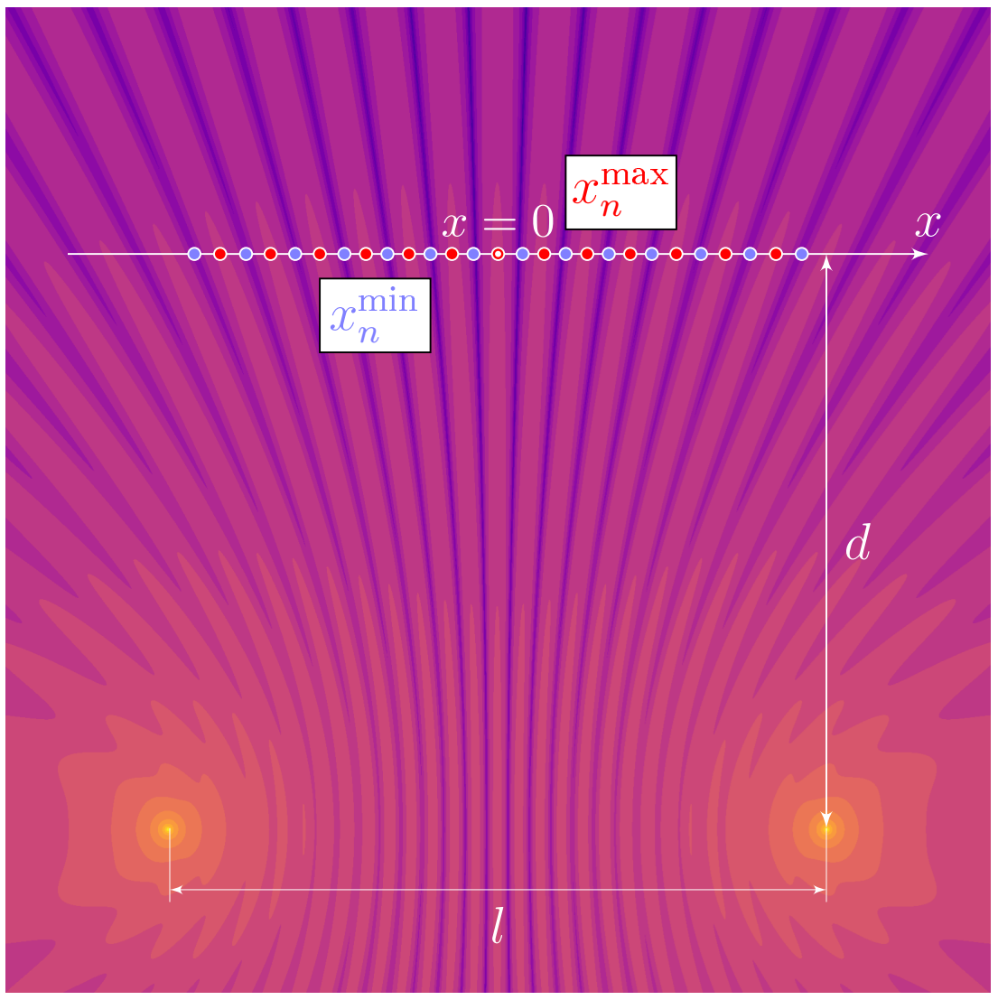
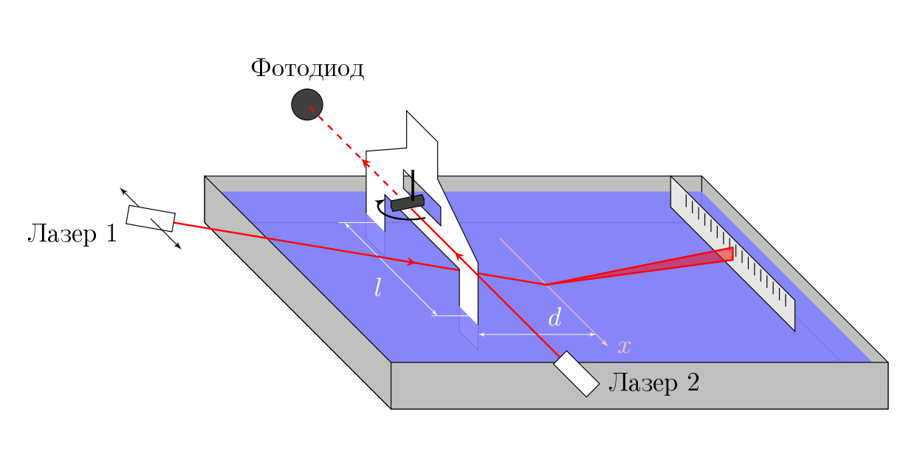

Y26 (2026) — English translation

Container with water (the height of the water is approximately equal to $3.5~см$) Wave source connected to a power source (plastic plate with a motor) Laboratory power source Lamp for visual observation of waves Laser module with power supply (2 pcs.) Photodiode with magnet Oscilloscope Connecting wire BNC-crocodile Wooden ruler 50 cm Metal ruler 30 cm Aluminum screen with magnetic layer of 2 tripods connected by a crossbar, a foot is attached in the middle of the crossbar Tripod (1 pc.) Coupler for attaching the tripod foot (4 pcs.) Foot for a tripod (3 pcs.) ATTENTION! Do not apply voltage more than 3 V to the motor! This will cause it to burn out!
ATTENTION! Do not apply voltage more than 3 V to the motor! This will cause it to burn out!
In this problem, the wave properties of vibrations of the surface $z(x,y,t)$ of water are studied. Plastic strips oscillating at a distance $l$ from each other are used as in-phase monochromatic sources. In all parts of the problem, consider that: each of the stripes creates cylindrical waves around itself: \[ z(r,t)\approx \operatorname{Re} \left[\dfrac{A_0}{\sqrt r}e^{i(\omega t - kr)}\right],\] where $r$ is the distance to the strip, the frequency of oscillations of the strips and the water surface coincides with the speed of rotation of the motor and remains constant at a fixed voltage. At a distance $d$ from the sources, the axis $x$ is located. Let us denote the coordinates of the nodes as $x^{\text{min}}_n$, and the coordinates of the antinodes as $x^{\text{max}}_n$.
For all parts of the problem, consider that:
At a distance $d$ from the sources there is an axis $x$. Let us denote the coordinates of the nodes as $x^{\text{min}}_n$, and the coordinates of the antinodes as $x^{\text{max}}_n$.

Assemble the following setup: Place the wave source so that the strips are submerged in water to a depth of about $2.5~см$ and the line connecting the ends is parallel to the short wall of the container. Turn on the voltage source and set $U=2.0~В$. Look at the reflection of the lamp in the water and identify the area where the waves from the two sources interfere. Turn off the lamp and aim the first laser beam at that area. The beam must be reflected from the water surface at a distance $d \approx 12.5~см$ from the wave sources. Lock $d$ and do not change it until the end of the experiment! Place the ruler in the tripod leg so that the beam reflected from the surface of the water falls on it. Direct the second laser beam so that it hits the motor eccentric and periodically closes as it rotates. Position the photodiode on the screen so that it is exposed to the second laser beam. To parallel offset laser 1, you can gently press the tripod with it against the edge of the container. To change the distance between the strips, loosen the wing nuts, move them (do not remove the entire structure from the tab) and tighten it back to avoid loosening during work.
To change the distance between the strips, loosen the wing nuts, move them (do not remove the entire structure from the tab) and tighten it back to avoid loosening during work.

Further, throughout the problem, the resulting formula can be used in the range $x\in[-l/2, l/2]$.
For waves on the water surface, the dispersion relation holds: \[f=\sqrt{\alpha/\lambda+\beta/\lambda^3} \tag{1},\] where $\alpha>0$ and $\beta > 0$.
\[f=\sqrt{\alpha/\lambda+\beta/\lambda^3} \tag{1},\]
where $\alpha>0$ and $\beta > 0$.
By changing the voltage on the motor, it is possible to determine the wavelength $\lambda$ for different frequencies $f$. Also use $d \approx 12.5~см$ for this part. Set the distance $l$ between sources to the maximum possible.
Source: https://pho.rs/p/5011